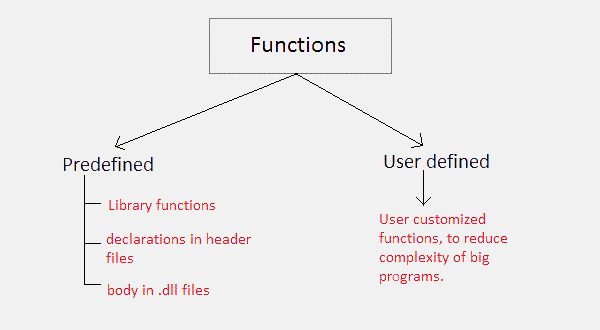

Functions in C
A function is a block of code that performs a particular task.
There are many situations where we might need to write same line of code for more than once in a program. This may lead to unnecessary repetition of code, bugs and even becomes boring for the programmer. So, C language provides an approach in which you can declare and define a group of statements once in the form of a function and it can be called and used whenever required.
These functions defined by the user are also know as User-defined Functions
C functions can be classified into two categories,
- Library functions
- User-defined functions

Library functions are those functions which are already defined in C library, example printf(), scanf(), strcat() etc. You just need to include appropriate header files to use these functions. These are already declared and defined in C libraries.
A User-defined functions on the other hand, are those functions which are defined by the user at the time of writing program. These functions are made for code reusability and for saving time and space.
Benefits of Using Functions
- It provides modularity to your program's structure.
- It makes your code reusable. You just have to call the function by its name to use it, wherever required.
- In case of large programs with thousands of code lines, debugging and editing becomes easier if you use functions.
- It makes the program more readable and easy to understand.
Function Declaration
General syntax for function declaration is,
returntype functionName(type1 parameter1, type2 parameter2,...);Like any variable or an array, a function must also be declared before its used. Function declaration informs the compiler about the function name, parameters is accept, and its return type. The actual body of the function can be defined separately. It's also called as Function Prototyping. Function declaration consists of 4 parts.
- returntype
- function name
- parameter list
- terminating semicolon
returntype
When a function is declared to perform some sort of calculation or any operation and is expected to provide with some result at the end, in such cases, a return statement is added at the end of function body. Return type specifies the type of value(int, float, char, double) that function is expected to return to the program which called the function.
Note: In case your function doesn't return any value, the return type would be void.
functionName
Function name is an identifier and it specifies the name of the function. The function name is any valid C identifier and therefore must follow the same naming rules like other variables in C language.
parameter list
The parameter list declares the type and number of arguments that the function expects when it is called. Also, the parameters in the parameter list receives the argument values when the function is called. They are often referred as formal parameters.
Time for an Example
Let's write a simple program with a main() function, and a user defined function to multiply two numbers, which will be called from the main() function.
#include<stdio.h>
int multiply(int a, int b); // function declaration
int main()
{
int i, j, result;
printf("Please enter 2 numbers you want to multiply...");
scanf("%d%d", &i, &j);
result = multiply(i, j); // function call
printf("The result of muliplication is: %d", result);
return 0;
}
int multiply(int a, int b)
{
return (a*b); // function defintion, this can be done in one line
}Function definition Syntax
Just like in the example above, the general syntax of function definition is,
returntype functionName(type1 parameter1, type2 parameter2,...)
{
// function body goes here
}The first line returntype functionName(type1 parameter1, type2 parameter2,...) is known as function header and the statement(s) within curly braces is called function body.
Note: While defining a function, there is no semicolon(;) after the parenthesis in the function header, unlike while declaring the function or calling the function.
functionbody
The function body contains the declarations and the statements(algorithm) necessary for performing the required task. The body is enclosed within curly braces { ... } and consists of three parts.
- local variable declaration(if required).
- function statements to perform the task inside the function.
- a return statement to return the result evaluated by the function(if return type is
void, then no return statement is required).
Calling a function
When a function is called, control of the program gets transferred to the function.
functionName(argument1, argument2,...);In the example above, the statement multiply(i, j); inside the main() function is function call.
Passing Arguments to a function
Arguments are the values specified during the function call, for which the formal parameters are declared while defining the function.

It is possible to have a function with parameters but no return type. It is not necessary, that if a function accepts parameter(s), it must return a result too.

While declaring the function, we have declared two parameters a and b of type int. Therefore, while calling that function, we need to pass two arguments, else we will get compilation error. And the two arguments passed should be received in the function definition, which means that the function header in the function definition should have the two parameters to hold the argument values. These received arguments are also known as formal parameters. The name of the variables while declaring, calling and defining a function can be different.
Returning a value from function
A function may or may not return a result. But if it does, we must use the return statement to output the result. return statement also ends the function execution, hence it must be the last statement of any function. If you write any statement after the return statement, it won't be executed.

The datatype of the value returned using the return statement should be same as the return type mentioned at function declaration and definition. If any of it mismatches, you will get compilation error.
In the next tutorial, we will learn about the different types of user defined functions in C language and the concept of Nesting of functions which is used in recursion.